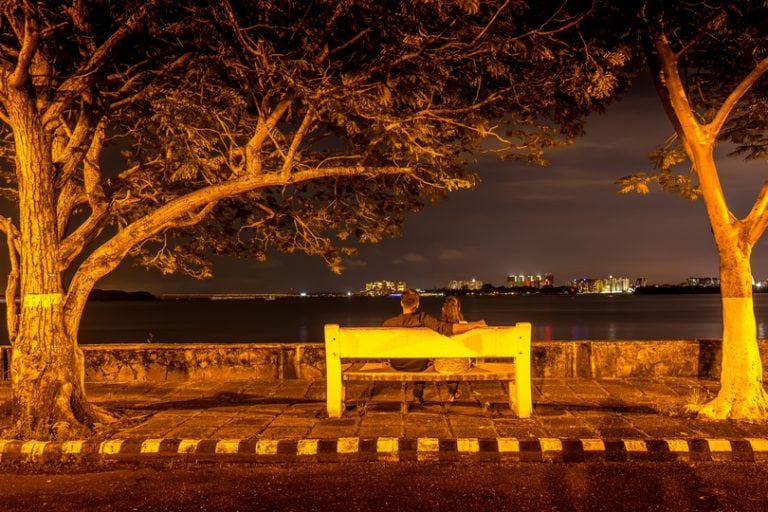

Ernakulam is a sprawling metropolis that beautifully combines its natural wonders with providing a base for a majority of the State’s business enterprises. Flanked by the Arabian sea, it is easily among the most visited locations in Kerala. It is an extremely important commercial centre but also has a plethora of destinations for tourists to enjoy.
The city of Kochi, with its fine natural harbour, is the undisputed crown jewel of the district. From historic locations that transport you to a time when it acted as the commercial hub of the legendary Spice Route to exotic trips on boats where one can simply relax and soak in the weather, Kochi never disappoints. Ernakulam has always epitomized the Malayali spirit of welcoming all who visit it and this tradition continues to this day.
1.Mattancherry Palace
The magnificent Mattancherry Palace built by the Portuguese in the year 1557, is considered to be one of the important places to see in Ernakulam. Popularly known as Dutch Palace, its imposing structure and architecture resembles a typical traditional Kerala house with 4 individual wings and a patio in between. Located on Palace Road, a place noted for being the former trade centre, it is flanked by backwaters of the Arabian Sea and is a short distance away from the heart of Ernakulam.
2.Fort Kochi
This seaside town in the south-western part of main Kochi is popular for its old-world colonial charm, and still showcases every single cultural change it has gone through over the centuries. One can spot remnants of Portuguese and Dutch colonialism in this quaint city which is dotted with similar structures and has an overall ambience that brings to light the colonial powers that once ruled over the place. The fort region of Kochi has witnessed the rise and fall of great powers including the Portuguese, Chinese and the Dutch, before it came under the nation-wide British rule in the 18th century. Fort Kochi is lined with old European structures, churches and other architectural buildings which transport you back to a different era.
3.Jewish Synagogue
Amongst the 7 synagogues located in this region, this Jewish synagogue is the only one which is in operation today. It was constructed in 1568 and is also called the Cochin Jewish Synagogue or Mattencherry Synagogue. A journey inside takes you through the rich architecture and history of the place and the pulpit in the middle of the hall signifies the rich heritage of a not so long ago established prayer centre. The building’s interior has been done up with rare and handcrafted materials most if which are extinct today. The best part is that the synagogue is still run by Jews and not the government authorities, which has helped to a great extent in maintaining the authenticity of the holy place.
4.Wellingdon Island
Beautifully housed in the heart of Kochi, the 82-year old Willingdon Island showcases the spectacular prowess and the intellectual level of human mind, and is counted as one of the best places to see in Ernakulam. The archipelago is named after Lord Willingdon, the British Viceroy of India, and is one of the largest human-made islands in India. This beautiful island provides efficient connectivity between Kochi port and other national and international ports, and is home to some of the opulent resorts and commercial and industrial buildings of the district.Apart from the commercial purposes, the island has become a popular weekend getaway destination amongst locals and tourists alike.

5.Mangalavanam Bird Sanctuary
The massive sanctuary sprawling over 7 acres is situated in the heart of the lively city of Kochi and comprises of 18-acres of mangroves which are filled with various species of trees and plants. The sanctuary remains one of the major tourist attractions and conducts a free nature camp which is attended by tourists, nature lovers and botanists from different parts of the world. The sanctuary is home to a large variety of rare migratory birds and is like a heaven for all the bird watchers and nature lovers. In the middle of the sanctuary, there is a shallow tidal lake present which is surrounded by thick mangrove vegetation and is connected to the backwaters of Kochi via a canal. The sanctuary houses six species of mammals, seven species of fishes and species of amphibians, and close to 194 birds belonging to 32 different species along with 17 species of butterflies and 51 species of spiders.